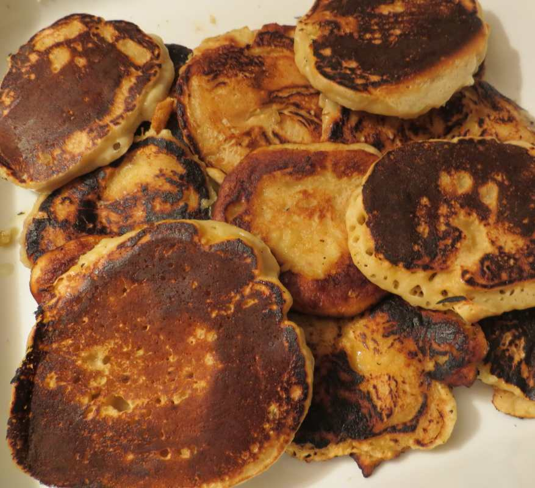

Eune crêpe est en prîncipe eune gâche coutchie sus eune pièrre caûffée, eune câssetrole, ou eune fielle dé méta. Oulle est grée d'eune farce ofûche d'auve d'la flieu, d's oeux et du lait.
Y'en a un tas d'difféthentes crêpes partout l'monde, s'lon des r'chettes traditionnelles dé difféthents pays. Les crêpes Jèrriaises sont êpaîsses, auve du frit dans la farce. Les crêpes Brétonnes sont hardi tenvres, coumme d'la dentelle, pus à co grandes épis pliées. Les crêpes Angliaiches sont coumme entre les deux. Nou trouve des crêpes grées atout du l'vain. Et au run d'la flieu y'en a des crêpes grées atout du sarrâsîn ou d'la patate ou d'la flieu d'riz. Les crêpes Êcôssaises sont coumme les Jèrriaises, eune tchullée d'farce laîssie tchée dans eune câssetrole, mais pouor ieux sans frit et auve du lait d'beurre ou du bicarbonate.
Les crêpes peuvent êt' chucrées ou coumme des lévreunes. S'nou-s'aime nou peut y mett' d'la m'lasse, du sitho d'or, du sitho d'êrabl'ye, du chucre, du myi, d'la g'lée ou du nièr beurre, ou autrément du jambon, un oeu crutchi sus la crêpe coumme oulle est caûffée, ou du fronmage, par exempl'ye. Nou peut mett' du jus d'limon ou d'la crème ou, sustout en Ûrope dé l'Êst, d'la crème suthie.
Nou peut rouôler du frit ou des lédgeunmes ou d'la viande dans des crêpes, ou coumme en Russie mett' du caviar (ou du saumon) sus des p'tites crêpes.
D'vant l'Tchithême, ch'est d'couôteunme dé graie des crêpes lé Mardi Gras. Ch'tait pouor faithe sèrvi l'beurre et l's oeux tchi n'taient pon pèrmîns duthant la jeûn'nie Chrêtchienne jusqu'à Pâques.
Mais nou mange des crêpes s'lon san chouaix en autchun temps partout l'monde. Bouan appétit!
Viyiz étout: